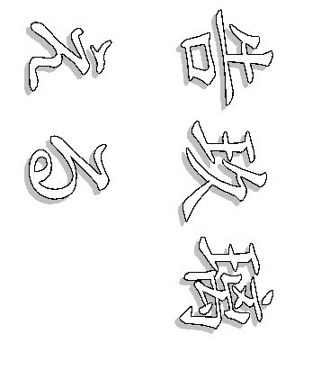
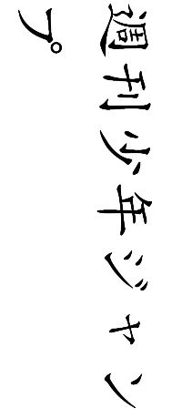
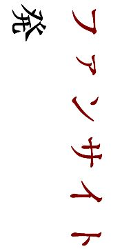
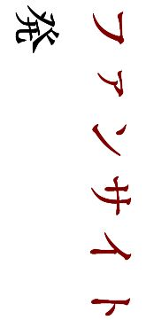

| ようこそ！霊界探偵事務所へ 前編 | |
| 告玖璃える | |
| (2015) | |
   

この度はご購入頂き、誠に有難うございます
この電子書籍は個人的に作られたファンブックです
原作・アニメ・出版社・その他関係者様とは一切関係がありません。 内容に関してはフィクションであり、実在のものとは一切関係がありません。
同人をご存じない一般の方や関係者様のお目に触れないようご配慮をお願いします
著作権がありますので、インターネットでの二次販売をされませんようご注意ください
サークル名：原作主義PLUS
執筆者：告玖璃(つくり）える
サイトURL：http://000813.web.fc2.com/index.html
メールアドレス：winterbird021102@gmail.com
pixivナンバー：2905612
～ようこそ！霊界探偵事務所へ～
キャラクター設定
→こちらは※パラレル小説となっているため、原作と多々異なる点があります。この場をお借りして紹介させて頂きます。
浦飯幽助...所属；皿屋敷中学２年
兼 『霊界探偵事務所』 霊界探偵
不慮の事故で一度霊界と関わり合い、霊界探偵に任命される。
雪村螢子とは幼なじみ。
本編にてその活躍ぶりを確認すれば分かる通り、カタチある任務をこなしているせいか、働きぶりは意外としっかりしており、責任感も意外とある...。
桑原和真...所属；皿屋敷中学２年
兼 『霊界探偵事務所』 事務所員
幽助とは喧嘩仲間であると同時に同級生でもある。
不良グループのリーダーであったが、噂になっている幽助の事故死・復活事件の情報を的確に知っている数少ない人間の一人でもある。
この作中で、桑原は※たまに呪符を使ってごまかすことがある。
基本的に世話焼き・真面目なところも。
⇒幽助・桑原は霊感の強さ故に学校生活に溶け込めず、義務教育は修了してないが、霊界都合で霊界が関与する事務所を運営するスタッフということにさせられている。
蔵馬（南野秀一）...所属；盟王学園高校２年
兼 『霊界探偵事務所』 事務所員
妖狐が息絶えそうになる寸前で、人間界に逃げ込み、人間の胎児に憑依融合し南野秀一として生活していた。
常に下等妖怪に命を狙われていたが、あるとき突然現れた強敵から助け出したという幽助と知り合ったことをきっかけに、霊界探偵事務所の運営を手伝っている。
勿論、報酬は受け取っており、ボランティアではないが、事務所の経営があまりにも悪いため、最近ではボランティア化している。
世話焼きで、食事を作ったり家庭的なことも難なくこなせる。
しかしそれ故毒舌家でもあり、心配性でもある。
コエンマ...霊界；閻魔大王の息子。
老人のような特徴のある喋り方をするが、霊界では赤子の姿であり、人間界では２０代（？）の姿をとる。
人間界でも正真正銘『おしゃぶり』をくわえていることから、見る者に奇妙な印象を与える。
ぼたん...霊界案内人 兼
『霊界探偵事務所』 霊界探偵助手 兼 占い師
占い師としての腕は右に出る者なしの百発百中。
人間界で資金稼ぎをし、霊界が人間界を監視する上での活動費としている。
雪村螢子...浦飯幽助の幼なじみ。
クラスでは学級委員を務め、部活動にも積極的に取り組んでいる優等生。
幽助が一度不慮な事故に遭い、霊界によって奇跡的な生還を遂げるまで、的確な情報を知っている数少ない人間の一人。
～ようこそ！霊界探偵事務所へ～
【来訪者】
飛影...連続殺人事件の犯人として、捜索されている少年。
しかし幽助により、その少年自身の犯罪でないことを瞬時に見極められ、事務所に連れ込まれる。
記憶喪失であったり、奇異な事情を持ち合わせているが、霊界探偵事務所は果たして少年を救えるのか...？
※パラレル小説とは
キャラクターは全く変わらないが
設定や世界観などを少し変えた中での二次創作
ようこそ！霊界探偵事務所へ
「...！ オイ、待てよ」
ふと、足早に駆けてく少年を目にし、呼び止めたのは『霊界探偵事務所』という、いかにも怪しい看板を掲げた事務所の霊界探偵だと名乗る人物である。
彼自身もまだ、思春期を迎えたばかりの少年のように見えた。
「オイッ！！ ちったぁー、待ちやがれ！！！」
立ち止まるどころか、更に速度を上げて逃げる少年に彼は短気を起こして追いかけ、肩を掴むとそこから引き剥がすように、強引に振り向かせた。
「...！！」
☆☆☆☆☆☆
「何も言わなくていいよ。...とりあえず、オレ達は警察には連絡しない、とだけ言っておこうか」
蔵馬、と名乗ったのは、先程の霊界探偵こと浦飯幽助の側近のような存在で、長髪に美しい容貌を持つ青年であった。
彼は、先程この事務所に連れてこられた少年の顔を、丁寧にタオルで拭っている。この青年も本来なら、まだ学業に専念していなければならない時期であろうが、何か訳ありなのだろうか。
少年は見事なまでに返り血を浴びていた。全身を黒で包み、髪は逆立っている。そして、燃えるような紅い瞳は蔵馬を睨んでいた。
『緊急ニュースです！ 今日の未明、連続殺人事件が皿屋敷屋敷市内にて起きました。犯人は、同一人物と見ており...』
ブツッ...
「幽助...」
古くて時折、横線の入るＴＶのスイッチが乱暴に切られる。
「...あー、なんか腹立つぜ。テメーら、フツーの人間に理解できるようなことじゃねーんだよ...」
「...確かに、そうですね...」
目の前で飛び交う会話に、少し疑いが晴れたらしい少年は二人を交互に見比べた。
「心配しなくても大丈夫ですよ。オレ達は、分かっていますから」
「蔵馬。んな面倒なことしてねーで、シャワー使っちまえばいいじゃねーか」
「...でも、電気代とか、まともに払えてないんじゃ...」
痛いことを突かれた幽助は硬直したが、すぐに気を取り直した。
「細けェーこと気にすんなって。この際、仕方ねーだろ？ そいつだっていい加減、血まみれで気持ち悪りィって思ってるぜ。早く体洗ってやれよ」
「...それもそうですね」
少年は猫のような目を大きくして、蔵馬を見つめた。
☆☆☆☆☆☆
「よォ浦飯。何か嬉しい依頼来たか？ 差し入れ持ってきてやったぜ」
「おおよ。今日は特別にでけー難問を一件、拾ってきたぜ」
幽助は溜め息をついて、蔵馬に淹れてもらったコーヒーを飲んだ。
「何だ？ その『拾ってきた』ってのはよー...。無報酬だったらやっていけねーだろうが、ココはよー...」
そう言いながら、机上にケーキらしき箱を置いた、大柄のこの男は辺りを見回した。
「ん？ 蔵馬、そいつは...？」
「幽助が拾ってきた難問ですよ」
相当疲れていたのか、今や白いバスタオルに身を包んでいるだけの少年がドライヤーを手にした蔵馬に髪を梳いてもらいながら眠っていた。
「桑原君、ケーキは冷蔵庫にしまっておいてもらえないかな？ 目を覚ましたら、食べるかもしれない」
「ん？ ああ、いいぜ」
桑原、と呼ばれたこの大柄な男は、意外にも幽助と同い年である。二人はケンカ仲間でもあったが、霊感の強さ故に学校生活に溶け込めずにいた。
義務教育を修了してないにも関わらず、複雑な事情でこの事務所を設けていた。蔵馬はその中で出会った一人であり、今では事務所を支える助手的なことまで引き受けている。困っている人達を助けてあげたい、というのが彼の常なる態度だ。普段は南野秀一として生活を送っている。
「で、名前とか訊き出せたのか？ まぁ、別に訊き出せなくても困らねーけどな」
「飛影、というそうですよ...。それより動揺してたかな。あまりにも、他人に理解されない部分があるし、突然の幽助との出会いにも戸惑っているんでしょう」
現在、彼は奥の寝室で寝かされている。
「オイ、待てよ。オレ全然分かんねーんだけど。何があったんだ？」
桑原が話に加わってくる。
「オレが昼飯買いに行って、こっちに戻ろうとしてたらよー...、アイツ...、飛影がオレの前を走って通り抜けようとしてた。...そん時、嫌な感じがしたんだ。気になって、追いかけて捕まえてみたら、血だらけで...。それ、飛影の血じゃなくて、返り血だったんだ」
その場は急速に静まり返り、深刻な雰囲気となったが、この空気を破るのは毎回桑原である。
「オイオイ、スゲー難問じゃねーか。いくら何でもよーハードル高過ぎるぜ。この状況、普通に殺人容疑の疑いがかかってるヤツを匿ってるよーにしか見えねーぜ」
幽助はう～ん、と苦悩の声を上げた。
「でもよ、この部屋入ってきたときとか、オレは特に何にも感じなかったぜ」
「...多分、その状態が普通なんだろうけど。なんか得体の知れねー強い妖気を確かに感じたんだ...。うまく言えねーけど」
幽助は顎を机上に乗せたまま、溜め息をついた。
「あ、そーいや、あの連続殺人事件って...！」
いつも通りかかる地元のラーメン屋の傍の電光板が、そんなニュースを報道する文字の羅列を流していたのを桑原は思い返した。
「おそらく、その返り血だったんじゃないかな。...でも、これだけは言える。彼の意志でやった訳じゃない」
幽助に代わって、蔵馬が続けた。
「...はぁ～、どーするんだよ、それ...」
桑原までもが一緒になって溜め息をつく。
「しかも、ボランティアだろ...？」
「...だよな。...オレ、連れてきたし...」
二人で何処までも落ち込んでいく様に、蔵馬は苦笑を含みつつも呆れていた。
「諦めて、最後まで責任取ったらどうです？」
☆☆☆☆☆☆
ふと目を開けた少年は、条件反射なのか微睡む間もなくハッと辺りを見渡した。
閉め切られた閉鎖空間。
見慣れない仕切り、壁、ドアー。
鼓動が早鐘のように高鳴る。
暗がりになった、この部屋に誰かいる。すぐ側で、シーツの上に両腕を組んで乗せ、多少仮眠を取っていたらしい。長髪の青年も暫くして目を開けた。
「あ、起きた？」
記憶がおぼろげながらに蘇る。
そう言えば、妙な人間に捕らえられて妙な場所に連れ込まれはしなかったか。
「ケーキあるよ。食べる？」
向けられた柔らかな微笑みに、焦燥感が溶けていくのを感じた。
「...けーき...？ 何だ、それは？」
☆☆☆☆☆☆
「こ、...コイツ、ケーキも知らねーのかよ？ 一体、どんな人生送ってきたら、ケーキと無縁になれるんだ？」
驚いているのか、からかっているのか分からない桑原に、蔵馬が得意の微笑みを見せた。
「桑原君、それ以上言ったら、即入院させるからね」
これは蔵馬にとって冗談でもなんでもなく飽くまで本気のつもりなのである。幽助も桑原も決して長いとは言えない付き合いの中ではあるが、その恐ろしさは充分に学習していた。
「六つも買ってきたの？」
「ん？ ああ...。だって今日は...」
バタンッ
言っている側から派手にドアーが開け放たれる。
いつかは破壊されてしまうのではないだろうか、というのが此処にいる一同の共通する悩みであった。
「おっはよーございますっ！！ この助手！ぼたんが！！只今戻って参りましたー！」
「ああ、ぼたんが来る日だったのか」
幽助はケーキの個数に納得した。
「だったのか、って何さ？」
「副業の占いは儲かってんだろー？」
「うん！ 今日も順調ってとこさ！ ...ん？ この子は何だい...？」
彼女はようやく、飛影の存在に気付いた。
「オメー、テンション高けェんだよ。八時廻ってんぞ」
「あら、そりゃ悪うござんした！ でもさ、ココは24時間でもやってなきゃ、儲からないんだろー？ あたしが手伝わなかったら、即潰れるんじゃないの？ 大体、この汚さ！ 誰もこんな胡散臭いとこ、訪ねたくないさね」
24時間、というのは大袈裟な表現だが、学校に行っている時間を除いて、大抵事務所は開けている、という感覚だ。認めざるを得ない悲しい事実であるが、営業時間の看板を掲げていてもいなくても、来客人数に影響は出ない。
「大体さ～...。今日なんかもサボリなんだろう？ 学校の方は真面目にちゃんと行ってるのかい？」
「聞き捨てならねーな。今日は午前で終わりなんだし、ちゃんと修学してから勤務についてんだからいいだろー？ 面倒くせェな...」
彼女は幽助に呆れたまま、飛影の方を見遣った。
「ちょっと熱いけど、いる？」
ケーキを頬張り、蔵馬に手渡された紅茶を口に含む少年は、いかにもケーキに夢中といった感じで、それ以外何も見えていないようだ。
「可愛い子だね。...ん？」
彼女の視線が鋭く、飛影が身につけているものに行く。
「アンタ達、...まさかそーゆー趣味が...！」
「ち、違げェーって。とにかく、そこのケーキ持ってきていいからよ、向こうで話しようぜ」
話をこれ以上ややこしくしない為にも、幽助は慌ててぼたん、と名乗る少女を連れて奥の部屋に引っ込んだ。
「はー...。アイツ、だから螢子ちゃんに嫌われるんだよ」
それを桑原が遠い目で見送る。
「それより変な時間に寝かせちまって、これから寝れんのかよ、そいつ...」
「大丈夫。ちゃんと寝かせますよ。...その時、オレが訊き出せる事は全部...」
そう言いかけた際に、ケーキに没頭していた筈の飛影に異変が起こり始めた。
シュウ～～～...
この禍々しい感じは、妖気か？
「は？ 何？ 何が起きんの？？」
桑原が『ムンクの叫び』のように、両手を頬に当てている。今まで前髪に覆われていた飛影の額に何か...。
「あれは邪眼なのか...？」
別称を千里眼、第三の眼のことである。
ビュッ！！
几帳面な蔵馬が、半分しか食べられないと言って、フォークではなくわざわざ包丁で切ったのが災いした。テーブルの上に無造作に置いてあったそれを握り締め、振り回してきたのだ。
「うわっ！ なっ！！ 危ねェって！」
何故か狙いが桑原に行き、邪眼の開き切った飛影の攻撃は止むことなく、繰り広げられていった。
蔵馬はハッとして、後ろから彼を羽交い絞めにしたが、それでも飛影の暴走は止められない。
妖力が彼の行動を支持しているのが分かる。
腕の中で抵抗されるのは仕方ないが、凶器だけは奪おうと、片腕を振り解いて柄の部分だけを後ろから掴んだ。
物凄い力だ...！
なんとか奪おうとするのだが、実際には固定するだけで精一杯だ。こんな程度では、容易に振り切られて逃げられてしまうに違いない。
「...！！」
邪魔をするな、と言わんばかりに飛影は暴れていたが、凶器を抑える為に伸ばされた蔵馬の右腕に目をやると、容赦なく噛み切った。
「うあっ...！」
鋭い痛みが全身を駆け抜ける。
「蔵馬！！」
彼の腕を食い千切ろうとでもいうのか、深く深く食い込ませ、なかなか離そうとはしない。散々暴れていたのだが、今では少しおとなしくなり、脈と同じ呼吸で流れ出す深紅の液体の味を楽しんでいるかのようにも見えた。
「く、桑原君、早く...！」
それまで、ゼィゼィ、と呼吸を荒げていた桑原は体勢を整えると、常に携帯している呪符を素早く少年の額に貼り付けた。
ジュッ...！
「あああああああああああっ！！！」
蔵馬の右腕から強制的に引き剥がされた少年の額から、白い蒸気のようなものが発せられていく。
「！」
まさか、呪符を使うとは予想だにしなかった蔵馬が、焦りを隠せずに桑原を見た。
額を抑えながら苦しがり、激しく床で暴れる少年に、同情を見せない彼は強い口調で言い放つ。
「テメーだな？ 例の殺人犯ってヤツはよー...」
「あっ、...うあっ！」
もう悲鳴を上げる力さえ残されていない、少年はのた打ち回ることも出来ず、全身を小刻みに痙攣させている。
「...！」
蔵馬は出血が酷い右腕を抑えていたが、別の場所に彼のものとは異なる別の血痕を見つけた。ところどころに激しく飛び散っているそれは、壁紙まで汚していた。蔵馬はあちこち見回したが思い当たることもなかった。
脱力していく少年の手から、握られていた刃が滑り落ちていく。
「！！」
あまりの驚愕に、背筋が寒くなる。この少年は柄ではなく、最初から刃の方を握り締めていたのだ。
少年の指、両の手の中三本は確実に切れていた。それ以上に流れる血液が多くて、掌全体が赤く染まり、何処が出血しているのかさえ区別がつかない。
「さっさと失せねぇか！」
呪符から立ち昇る白い煙。そのうち少年の体はもうピクリとも動かなくなった。
「...大量に呪符持たしときゃー、解決すんじゃねーか？」
「真面目にやってもらえます？」
☆☆☆☆☆☆
指に巻かれた包帯を見つつ、今はおとなしく眠る少年にそっと布団を掛けてやる。
彼の右腕もまた同様に手当てされ、包帯が巻かれていた。
「...本当は、知っていたんだね」
静かに部屋に入ってきたぼたんは、戸を閉めるとやはり静かに近づいてきた。
蔵馬は少年の前髪を掻き分け、その額の中心にある、両目とは異なるもう一つの目を近くから見つめていた。
「桑ちゃんと二人だけにしてごめんよ。私も幽助もあのとき、側にいるべきだったんだ」
ぼたんは、この少年が包丁を振り回し、暴走したことを聞かされてきたらしい。
「いや、いいんだ。飛影のことも少し分かった気がするしね」
蔵馬は眠る少年の寝顔から過去を見据えるように少し目を鋭くした。
「...この子のことは、アタシも調べておくよ」
蔵馬は無言だ。
ぼたんは一瞬躊躇ったが、気を取り直した。
「あ、そうそう！ 実はね、さっきちょっと抜け出して買ってきたんだよ」
満面に笑みを湛えた彼女は、手にしていた袋を手渡した。蔵馬は中身を確認すると礼を言った。入っていたのは服である。
「適当に選んできちゃったけど、サイズは合うと思うんだ。いつまでも、そんな恰好させてたら風邪ひくだろう？」
「本当に助かりましたよ」
「ふふ、とんでもない。あのバカ達は気付かないだろーと思ってさ。アタシ、今日はもう帰るけどアンタは此処で泊まっていくんだろう？」
「ええ、まあ...」
「明日は何処に行くつもりなんだい？ 経費で落としちゃいなよ」
ぼたんは、安らかな寝息を立てている飛影の寝顔を見た。明日は日曜だ。学校はない。この少年を何処に連れ回すのか、という意味である。
「デパートとか、ちょっとした買い物ですよ。本格的な娯楽となると、ちょっと刺激が強過ぎるしね」
「なるほど、頭いいね♪ 明日も副業やってるからさ、暇だったら帰り、寄っていきなよ。タダにしといたげるよ」
「有難いですね」
「んーん、そんなことないさ。じゃあね、おやすみー」
お疲れ様でした、と蔵馬は一礼すると、彼女は身を翻し、あっという間に事務所から姿を消した。
その晩をかけて、取り留めもないことをただひたすら議論していたような気がする。というのも、途中で*酒が入り、そのうち愚痴ばかりが横行する始末。話題は本筋から確実に逸れていたのである。
（*２０歳未満の飲酒は法律で禁じられています）
☆☆☆☆☆☆
陽は昇り、この事務所にも朝の到来を告げる眩しいばかりの光が差し込んだ時、蔵馬は目を覚ました。
そんなに飲んだつもりはなかったが、いつの間にか寝てしまったようだ。光熱費のことなど考えず、シャワーを借りてしまう。変に寝汗までかいていた。
傷はまだ表面の皮が破け、深い部分が抉れたような状態になっていたが、ぼたんが治癒能力を霊的に高めてくれたので回復は早いだろうと思われた。
濡れたままの髪をタオルで拭きながら奥の寝室を覗くと、とっくに目覚めている飛影の姿が目に飛び込んできた。
この狭い部屋はベッドが主に場所取っている。
戸の開閉で行き手が塞がるほどだ。
勿論、部屋の広さを考慮しなかったために起きたミスである。この寝具が運び込まれた当時、現場を見た誰もがよくこの部屋に設置できたな、と関心するほどであった。
彼はそこで上体を起こしたまま下りようとする様子もなく、ただ小さな窓から隙間ほどしかない外を見上げていた。
ぼたんが選んだ服は、確かにサイズもピッタリで違和感もなかった。おそらく昨日飛影が身に着けていた服を考慮してくれたのだろう。相当な返り血を浴びて汚れていたので、気分的にも洗ってまた着せてやろうとは思えず、そのまま処分したのだ。
黒のジーンズに青のタンクトップは、彼によく似合っていた。その上に幽助のパーカーを羽織らせてやる。スニーカーも幽助のサイズの合っていないものを拝借した。
電車に乗り、少し離れた隣町まで出掛ける。飛影は窓から見える、動く風景に釘付けだ。昨日のケーキにしても彼はあまりにもこの世界を知らないようだ。
「電車は初めて？」
「...乗ったことはあるかもしれない。何も憶えていないが」
記憶喪失なのだろうか。
二駅で下車し、広い通りを歩く。
今はまだ大丈夫だが、時間差で混みそうな気がした。昼過ぎでピークを迎えるだろう。その時間帯に移動することだけは避けたかった。
高層デパートに入ると、ショーウィンドウを素直に横切れない飛影が気に入った喫茶店に入る事にした。
彼は何も言わないが、その瞳は確実に輝きを増していた。
「...貴様らは、何だ？」
注文したクレープを完食し、紅茶を飲むと落ち着いたのか、彼は不器用ながらも少しずつ言葉を紡ぎ出すようになった。
それでも、ガラス張りの窓から見える空間が気になるらしく、時々そっちにも目を向ける。
「貴方のような、悩みを抱えている人達を救う事を目的とした、探偵の集まり...みたいなものかな？ 皆、悪い人ではないと思うよ」
「言っておくがオレは金を払えないぞ」
「ええ。別にオレたちも貴方から取ろうとは考えてません。ただ放っておけないタチなんです」
「...そんなことより。オレが奇形でも、お前たちは何とも思わないのか？」
「いいえ。何か不都合なことでも？」
「......気にならないなら......、それでいい」
奇形児ー...。
その客観的で残酷な事実を認めるのに、一体どれほどの苦痛が伴うのだろう。
飛影は一呼吸置くと、再びボソッと呟くような口調で話し始めた。
「...オレには、この目を開くことはできない。...だが、オレに止められない力が働くとき...、この目は開いているらしい...」
心なしか、飛影の顔が青ざめているように見える。
「気が付いたら、全員死んでいて...。だが、オレはどうしてそんな事をしたのか、全く思い出せないんだ」
ティーカップを掴んでいる両手が震えているような気がする。
「...そう。貴方は、自分でも知らない内に何かとてつもないことをやらかしている、という感覚なんだね」
飛影は僅かに頷いた。
「それより指の怪我は？ ...痛まない？」
「...昨日は、オレが......。悪かった...」
「気にしてないよ。貴方が大丈夫なら、それでいい」
蔵馬は笑顔を作ると、飛影がまた僅かに動揺しているのが分かる。
「オレは...、本当にお前たちを...」
「大丈夫。殺そうと思っても、到底死にそうにない人の集まりでもあるんですよ」
カップが皿の上に置かれ、神経質な音を立てる。
「実は...、オレがあの事務所と関わり合いになったきっかけは、妖怪に取り憑かれたからなんです」
蔵馬の発言に飛影は耳を疑った。
「いや、こういう場合...、オレが取り憑いた、と言った方が正しいかな...。オレはこの肉体を乗っ取った、蔵馬、という名の妖狐。この体は人間のもので、南野秀一として生活している」
生きる執念を捨て切ることが出来ず、結果的には生きることが許されたこと。
しかし、本来の意識を葬ってしまったことに対する罪の意識が消えないこと。
今は、南野秀一として、蔵馬として、生きていること。
その際に幽助に世話になったことなどを、蔵馬は順を追って話した。
「初めて貴方を見た時、まるで自分を見ているような気がして、心から助けたいと思った」
「...そんなことより、お前はどうしたかったんだ？ 生きることを一度拒んだ、ということか？」
「ああ、経緯（いきさつ）を話していなかったね」
蔵馬は内心で驚いていた。
知りたいですか？、と念の為に訊いてみると、少年は視線を逸らさず、その首を縦に振った。
少年は一語一語を食い入るように聞いている。
転生してから、妖力が回復するまで十年間以上騙し育ててもらったこと。
そして、いつの間にか、仮の母親に情が移り、姿を消すことが出来なかったこと。
「魔物のオレに、こんな感情が芽生えるなんて思わなかった」
ある時、それは訪れた。
ほぼ毎日のように訪れてくる下等妖怪から、命を狙われていたりしていたのだが、その時だけは訳が違った。突然にして何の前触れもなく、強力な妖怪が現れたのである。
「その時、幽助と知り合ったんですよ」
相当な深手を負わされ、逃げる気力さえ残されていなかった。
そこへ幽助とぼたんが現れて、助け出してくれたという。話によると、彼らが全て片をつけてくれたらしい。
『オレ達と一緒に、人間界を害する妖怪の退治とか、奇怪な現象を解消する為の、協力をしてくんねーかな？ っつっても、特にオレに正義感がある訳じゃねーんだけどな。色々あって、この仕事を半ば強引に引き受けさせられたんだ』
幽助はそう言うと、ぼたんを見た。
『アタシはねー、実を言うと人間界（ココ）の住人ではないんだ。霊界に仕えている者なんだよ。...だから、アンタのことも知っている。脅すつもりでも何でもないんだけど、幽助だけじゃあ不安なんだ』
『言いたいこと言いやがって...』
それを横で聞いていた幽助は、悪態づいた。
『協力してくれるんなら、それなりに幽助と同様、手当てはつけるよ♪ 報酬はなかなかいいと思うけどね』
『だったら、オレに意味分かんねー経理までやらせてんじゃねーよ』
『アンタは特別だって、日頃から言ってるじゃないか』
いちいち、突っ込む幽助の発言を聞いていると、相当いいように使われているようだった。
なるほどな...。霊界の部下、という訳か。幽助と霊界の繋がりは見えないが、何かあったんだろう。
『それでね、蔵馬。霊界も今はちょっと不景気なんだけど、それでも引き受けてくれるっていうんなら、善行を積む意味としても、罪は軽くなるだろうさ。まあ、霊界に媚を売れ、ってんじゃあないけど、アンタは本当にそのままで満足なのかい？』
満足する、とはどういうことなのか。
『アンタはココ(人間界)で、違う価値観を知った。あたしは、アンタの人格については評価しているつもりなんだ。...でも、強くなりたいんだろう？ あたしにはアンタが本当に人間のまま、最後まで暮らせるとは思えない』
確かにそうだった。命を狙われている為に、誰との結びつきも避けたいと思うようになっていた。そうでなければ、必ずや危険に巻き込むことになるからだ。
『幽助も、霊界探偵としては、まだまだ使えないんだ』
再び、幽助からブーイングが飛ぶが、それを更に押しのけて彼女は続けた。
『修行させる意味も含めて、こんなことやらせてるんだけどさ、アンタがやってくれるんなら、お互いにいい刺激にもなると思ってね...。蔵馬が入ってくれれば、幽助も少しマシになるよ。自分からではサボることばっかしか頭にないけど、仲良くしてあげてね』
そう、そんな感じで、霊界探偵事務所に勤めることになった。今でも、それが鮮明に思い出せるのは何故だろうか。
蔵馬は思い出して苦笑した。
「オレは、幽助や桑原君と知り合えたこと。また、同じような悩みを抱えた人に出会える機会が与えられたことに感謝している。そうでなければ、オレは今頃どうしていたか分からない」
飛影は何も言わなかったが、事務所に関しても多少納得したようだ。
「ところで、注文は？」
「...いらん」
「買い物したら、今度は喫茶店じゃなくて、ちゃんとしたもの食べよう」
「...破産するぞ」
「あれ？ 気ィ遣ってるんですか？」
蔵馬は笑った。
勿論、破産するのは蔵馬でなく、稼ぎのない事務所なのだが。
それでも、それなりに報酬は受け取れる。
悪いと思いつつも、もらえる手当ては拒否しないのがモットーだ。
「大丈夫。さっきも言ったけど、貴方からは何も請求なんてしないから。事務所が貧乏なのは、オレ達の人件費に回っているからでしょう」
「お前、悪いヤツだな」
☆☆☆☆☆☆
買い物は主に、事務所の模様替えに使用するものや、飛影の衣類に集中した。
「アレは何だ？」
飛影が指差す方向を視線で追っていくと、何やら人だかりが出来ている。
「ああ。三千円以上で一度抽選会に参加できるイベント...みたいですね」
「善は急げだ。さっさと行くぞ」
大荷物を提げながらも、その行列の後ろに並ぼうとする飛影を引き止める。
「果報は寝て待て、ですよ。先に食べてからにしましょう。...そうすれば、その分も抽選で使えるから」
蔵馬はとてもじゃないが、あの人込みに紛れる気はしなかった。
「賞が出次第、抽選会が終わるぞ」
いや、そんなことを言われても...。
「荷物は全部持ってやる...。早く来い」
蔵馬の手から全て買い物袋を奪うと、飛影はその列の後ろについた。その際に、素早くレシートをも手にしている。何たる早業だろうか。
言わないまでも、飛影は楽しそうだった。笑顔を見せることはないが、どことなく足元が軽い気がした。
仕方がない。
蔵馬はそう思って、深く息をついた。
それにしてもテーマパークのアトラクション３０分待ちなら分かるが、ただの抽選会にも関らず対抗できそうなほどに列は長い。そんなに良い賞品があるのかとさえ、疑ってしまいそうになる。
飛影が暴れ出すことは、おそらくないだろう。
昨日そうなった原因というのは、極度の緊張が重なったせいではないかと蔵馬は推測していた。そうでなければスイッチの入る可能性はない。
「じゃあ、ちょっと並んで待っててね」
聞こえているとは思うが、視線の先は賞が出る時にだけ振られるベルだ。
生ものの類(たぐい)は一切買っていないので、時間をおいても問題はないが、時間の経過ごとに増してきた人込みに、蔵馬は完全に疲れた。
列が丁度半分のところへ来た時、やっと戻ってきた蔵馬が両手の塞がっている飛影の目の前に買ってきたばかりのそれを差し出した。
「ほら、半分持つから」
片手いっぱいに提げていたビニール袋を、半ば強引に飛影から奪うと、自由になった手にそれを持たせてやる。
「？」
カップルが同じようなものを持ちながら、はしゃいで横を通りすがる。
「ただ待たせられてるのも何だし...、これでも食べてなよ」
やはり、食べ物であることには間違いらしい、ということを確認した飛影が、小さく舌を出してその表面を舐めた。
「どう？」
「...うまい」
無難なバニラにしてみたが、特別に嫌がる様子でもない。しかし、やはり夢中にさせられたのか、前に進んでいく列に傍について蔵馬が促してやらなければならなかった。
表面は冷たいが、濃厚な甘さと不思議な触感を持つアイスクリームが彼を虜にしたのは言うまでもない。
ようやく、食べ終わった頃になって列の最先端に近づいた。
☆☆☆☆☆☆
「...疲れましたね」
「ああ」
陽は暮れかけていた。アスファルトに二つの影が長く伸びる。
飛影は口先だけで蔵馬に合わせていたが、特別に疲れているような感じではない。むしろ、まだまだ遊び足りないようにさえ見える。
これはもしかしなくとも、年齢を意識せざるを得ない状況なのかもしれないが、蔵馬は敢えて考えなかった。
それより早く帰って休みたい。
「ところで...」
そう言って、先程から飛影が両腕を懸命に回しているが、抱え切れていない腕の中のものに目をやった。
「良かったですね」
「...ああ」
あの抽選会で、三回引くことができたのだが、最後に見事一等を当てることに成功したのだ。
その賞品は無駄な体積を誇るテディベアである。
女の子なら、ともかく...。
大きさは並ではない。あの事務所の狭いドアーを通過するかどうかさえも疑わしい。
あの邪魔な寝具に引き続き、このぬいぐるみは使いどころのない不要なものでしかない。
ただでさえ狭い事務所がまた更に狭くなると思うと、少し目眩がする。
それより二等の商品券、五千円分の方が蔵馬にしてみれば魅力的だった。
しかし受け取ったテディベアをしっかりと胸に引き寄せ、離そうとする様子を見せない飛影を見ていると、そう言い出すこともできなかったのである。
蔵馬は思い出しただけでも、また一つ溜め息をつきたくなった。
「...」
疲労感が滲み出ている背中に目をやる気配がある。それは、唇にうっすらと笑みを浮かべていた。
☆☆☆☆☆☆
事務所の玄関を辛うじて通過したが、その際に押し込んでしまったのを無言の視線が絡みつくように凝視していたのを感じた。帰りを待っていた幽助や桑原にからかわれても、夕飯の支度ができても、飛影はテディベアを夢中でいじっている。
「アイツ、あれで本当に男かよ？」
呆れながら、蔵馬手製のピラフに手をつけ始めた幽助が、それでも何かぼやいている。
「ええ、それは否定しません」
「はあ？ トイレだけじゃ証拠になんねーぜ」
横から桑原も加わってくる。
「あっ！ そーか。あん時、シャワーに入れたよな、蔵馬？」
幽助は思い出して、手を打った。
「ええ。ですから、彼は女の子ではありません」
「なんだ、そーゆー証拠があったのか...」
つまらなそうに桑原が、スプーンを動かす。
「何か期待していたんですか、桑原君？」
「べ、別にそんなんじゃねーって！！」
「蔵馬。そんで、例のヤツは開かなかったんだろう？ えっと...、邪眼だったっけ？」
「そうですね。...何も感じなかったし。今日はとても楽しそうでしたよ」
「ふーん...。じゃ、心配いらねーみてーだな」
幽助はそれでも少し考え込んでいたが、本当にあの時感じたような妖気がないことを確認していた。
あれだけのデカイ妖気が一気に吹っ飛ぶとは思えねー...。飛影がまだ子供だからか？ いや、そんな単純な問題で片付けられるような、そんなもんじゃなかった。また暫くしたら暴れるかもしれねー。
「幽助、...どうかしましたか？」
「ん？ あ、いや、何でもねー...」
「貴方が考え事をしているなんて珍しいですね」
「ナニーー！！！ オレが何か考え事してたらおかしいのかよ？？」
「いえ、そこまで言ってませんけど」
蔵馬に口で勝てるハズはなかったが、それ以上に頭がついていかない。未消化な思いを溜め込んだまま、悔しさに似た感情に飲み込まれて幽助はイライラした。
「で？ アイツはどーすんだよ？ 蔵馬、オメー明日学校だろ？」
「ええ。でも、外に出すのはマズイと、顔が言ってますね」
「ったりめェだ！！ まだ、何にも分かっちゃいねーんだからなー」
「だけどよ、浦飯。だからって構えていたら、ずっとこのままだぜ。放っておく、ってワケでもねーが、少し頭を冷やしながら様子を見守った方が賢明ってもんだぜ、なあ蔵馬？」
横から桑原が会話に入ってくる。
「...まあ、その通りですね。幽助、焦る気持ちは分かるけど、焦ってもどうにもならないこともある。だから、もう少しこのまま様子を見よう。それで、飛影のことはぼたんに任せることも出来るし、どうとでもなる。ただ問題は、外に出すかどうか、ということですか？」
「...何が原因でそうなるのか、分かったもんじゃねーからな。いつどこで邪眼が開くか分かんねーから、一人で外に出すようなことは絶対にしたくねー。アイツ自身が何より不安定で、実際に振り回されてる所があるから尚更だぜ」
それを聞いて蔵馬は頷いた。
「確かに。一人にさせるのはやめた方がいいな...。ところで、二人は明日学校に行くんですか？」
「「...うーん、どーすっかな」」
幽助と桑原の声が同じタイミングで重なり合う。行ったとしてもサボるのは、目に見えるようだ。問題は事務所に残れるかどうか、であった。
「だったら、オメーが相手してろよ。オレ、久々パチンコ行ってくらぁ～！！」
「待てよ、浦飯。テメー、自分の任務を放棄する気かよ？」
口論を始めた二人の間で、蔵馬は真剣に悩み始めていた。
側にいてあげたいのは山々だけど...。
だが、一向に意見がまとまる様子はなかった。
☆☆☆☆☆☆
翌日。
「ダメよ！！」
その一言で結局、幽助の学校サボり案は消えた。話によると、テストを控えている重要な時期だとか。
流石の幽助も彼女、雪村螢子の前では頭が上がらず、ほぼ強制的に登校させられたようだ。
「とりあえず、貴方が来てくれて助かりましたよ」
「...ヤツは、責任が全くないからなー...。まあ、ワシも暫く留守にしておったが」
事務所の椅子に腰掛け、久々にその姿を見せたというコエンマ、と名乗る人物は一見、少し変わった癖のある喋り方をする青年だが、どこからどう見ても正真正銘『おしゃぶり』をくわえていることから、見る者に奇妙さを与えている。
「それで、桑原君もちゃんと行ったようですね」
「アイツは変なライバル意識を燃やしているようだからな。幽助が１点取るなら、２点。３点取るなら４点と、つまらん根性だけはあるようだ」
「...誤魔化さないで下さいよ、コエンマ」
お前の話に乗ったつもりなのに、という顔のままコエンマは蔵馬に振り向いた。
「一体、何の調査に行ってたんですか？ しかも、貴方にしては珍しく一週間も空けておくなんて。お陰で、幽助の成績が余計に落ちたらどう責任を取るつもりなんですか？」
「どうって...。幽助はそれでもいい、と」
「話を逸らさないで下さい。だから、何の調査ですか？」
お前が言ったのにー！
言葉にはしなかったが、コエンマは小さく咳払いすると本題に入った。
「幽助が偶然拾ってきた難問...、ズバリ、飛影のことだ。戻ってきたら、居座ってるヤツがおったからビックリしたぞ」
「...あまり、ビックリしているようにも見えないんですけどね。気のせいだといいですが」
「...なんかあったのか、蔵馬？」
単に、周りが平和過ぎるだけなのだが、蔵馬の突っ込みが激しく厳しいように感じられて、コエンマは遠慮気味に訊いた。
「あまりにも周りが読めてない人が多過ぎて、オレが一挙に引き受けているだけですから、気にしないで下さい...」
「そうか、それは大変だな」
やはり他人事のようにしか感じられない台詞に、蔵馬は咳払いを一つした。
「分かったことがあるなら教えて欲しいんですが」
コエンマは難しそうに顔を歪めると、大きく溜め息を一つついてから話を切り出した。
「下等妖怪の類じゃないことは、もう分かっておるな。幽助が注意していたように、もっと危険なものだ。だが、本当に注意しておかなければならないのは、飛影じゃない。ヤツは何も分かっていない。連続殺人事件の現場に行ってみたが、飛影とは違う確かな妖気が」
「それは、邪眼の妖気では？」
「いや、違う。もう一つの妖気だ。正確に言うと、邪眼が開くのはその妖気に対抗する為であって、その力が働かなければ邪眼は開かないし、実際に無害なのだ」
☆☆☆☆☆☆
人気（ひとけ）がない、と言っていいだろう、その狭い路地に水晶を置き、怪しい占い師は客が通りかかるのを待っていた。
知る人ぞ知る、占い師。
その腕は右に出る者なしの百発百中だ。
夕方が迫ると、一人二人と数が増してくる。行列ができるほどではないが、いい具合に人が未来を知る為に何処からともなく集まってくる。
しかし、場所は陽も当たらない死角であり、足を踏み入れるのは少し勇気が要る。
人が全く通りかからないやね。
どんな日でも一人や二人、必ず通りかかるものだが。
ぼたんは首を傾げた。
「？」
と、その時。あまりにも不自然に、音もなく現れた気配がある。
おや。気を抜き過ぎて、気づかなかったかもしれないね。
「よろしかったら、占って差し上げましょうか？」
すると、その気配は足を止めて振り返った。
それはまだほんの幼い少女であった。
ぼたんは声をかける相手を間違えたと思った。しかし、かけてしまったものは仕方ないと諦めて、近付いてくる少女を迎える。
「綺麗だろう？ この水晶」
ぼたんは笑顔で少女を見たが、その顔はニコリともしなかった。
「ねぇ」
ザワッ、と嫌な感じが駆け抜ける。
前髪で覆われてよく見えなかったが、冷たい眼差しをしている右側の目と目が合った。
背筋が凍り付くような感覚がある。
この子...、片目...。左側の目がない...？
逃げ出したい衝動を抑えながら、ぼたんは少女をよく観察した。
薄暗くてよく見えないが、少女の着ている服はボロボロで夥しいまでの血痕がついていた。また、これも先天性によるものなのか否かは判断できなかったが、本来はレースの可愛らしい服だったと思われるワンピースの左側の袖が、途中から腕を通しているときの膨らみがない。
「アナタの中に、私の探している人がいるわ」
「な、何のことだい？」
「...ここ数日のうちに、会ったんじゃないかしら？」
「え...？」
突然のことなので、まだ混乱しており、頭の中を整理し切れていないぼたんを見て、少女は少しずつゆっくりとした口調で言った。
「その人はね、自分のことがよく分かっていないの。きっと知ってる筈だわ。思い出して」
「えっとぉ～...」
「私、その人に嫌われているみたいなの」
少女は相変わらず、眉一つ動かさずに続けた。
「だってね、ほら。私をこんな風に刺したのよ」
！！
ぼたんは、ハッとした。
ヒエイ...？ あの子も返り血を浴びていた、って...！
すると、少女は古い血痕で汚れたままの右手を口元に当て、クスクスと笑い始めた。
「ほら、知ってる」
音もなく、気配が近付いてくる。
「な、何が目的なんだい？」
勇気を出し、青ざめたままで必死に声を絞る。
「私を、その人に会わせて」
その瞬間、暗くて狭い路地に悲鳴が響いた。
☆☆☆☆☆☆
遅せェな、ぼたんのヤツ...。
終業のチャイムが鳴り、教室で待っていた幽助は少し嫌気が差していた。
実際には、そんなに長いこと待っていないのだが、幽助にとって待つという行為は苦手なことの一つだった。
占いの結果に客がクレームでもつけてんのかねー？
『オッケー！ じゃあ、その時間には行くよ。仕事も中断するから』
「はぁ～。でも確かにアイツがサボったことは、今まで一度もなかったからなー...」
痺れを切らして鞄を持ち直し、教室を出ると嫌に生温かい風に吹かれた。
大変な事に巻き込まれてなきゃいいけど...。
「あれ？ 幽助ー？ まだ残ってたの？」
螢子である。学級委員会か部活の帰りだろう。
「おお、まあな」
「期末に向けての勉強は進んでる？」
「...」
「このままだとアンタ、進級できないわよ」
螢子の思考回路は一般教師とそう変わらない。
「そっ、そーだよな～。勉強しねーとな～！！ じゃっ、螢子。オレは勉強しにこれから帰るぜ」
幽助が螢子の傍を通りすがろうとすると、彼女の待って、の声が彼の行動を制止した。
「勉強、一人でやっても分からないでしょ？」
ギシッ、ギシッ、と小刻みのぎこちない動作で、幽助は振り返った。
「喫茶店に寄っていって、そこで一緒に勉強しましょうか」
否を唱えさせない口調だった。
「大丈夫よ。勉強なんて、やったかやらないかで勝負がつくだけなんだから。やったらやった分、結果が出せるわよ」
螢子は幽助の袖を掴み、強引に靴箱の前へと連れて行く。
「オイ。何、ムキになってんだよ？」
そうは言ってみせるものの、幽助には螢子の気持ちの理由というものが無理なく理解できていた。
幽助は一度不慮な事故に遭い、霊界によって奇跡的な生還を遂げる以前まで、ただ八つ当たりをしていたいのだと思い込んでいたし、今よりもっと幼かったせいでそう思い込みたかったのかもしれなかった。
しかし実際に迎えた通夜の日に、自分の死を悼み、泣いてくれた人間は母親以外に彼女しかいなかったのである。
生還した今となっては、学校生活における浦飯幽助に対する周囲の関わり方というのは事故に遭遇する以前とそう変わっていない。しかし螢子に関して言えば、前にも増して世話焼きになった。
勉強しなさい、とは言っても、それに付き合ってくれるというようなことはほとんどなかった。
「ねえ、それよりバイトでどれぐらい稼いでんの？」
「いっ？」
幽助はもお少しで危うくコケそうになるところだった。
「どうしても人手が足りないから、内緒でバイトすることになった、ってぼたんさんから聞いたわよ。なんか、依頼来たの？ 私、行ってもいい？」
ぼたんのヤツ、どういう説明してんだ！！ まあ、間違いじゃねーけど、これがバイトならとっくに辞めてるぜ。
「ん～...。まあ、気が向いたら話してやるよ」
幽助と螢子はそのまま校門をくぐると、一軒しかない地元の喫茶店を目指した。
☆☆☆☆☆☆
「おお、飛影。コエンマは？」
事務所に帰ってきた桑原が、玄関の戸を開けると、その中央の回転椅子に腰掛けている飛影が目に入った。どうやら、本を読んでいたようだ。
ったく。業務内容を全然理解してないようなヤツに、留守を頼むなよな～...。
桑原は革靴を片手で剥ぎ取るように脱ぎながら、無意識に溜め息をついた。
「さっき、依頼が来て飛んでいったぞ」
「ほぉ～、そりゃ珍しいこともあるもんだな」
桑原は完全に靴を脱ぎ終えると無遠慮に中に入り、左手に提げていたビニール袋から牛乳を取り出した。
狭い台所でカップに並々と注ぎ、それを飛影の前に持っていってやる。
「ほらよ」
「？」
飛影は疑いもせずに、それを手にとって一口含んだが、それがどういうものなのかよく分かっていなかった。
特に甘くもなく後味もスッキリしないものだが、別に嫌いでもない。ただ柔らかい味わいのする白い液体だ。
「蔵馬はまだ帰ってねーか...」
「蔵馬はガッコウだ」
飛影は床に置いてあったテディベアをいじり始める。
「そっか、そっか。じゃあ、オレが代わりに遊んでやろうか？」
「......勘違いするな」
「ああ？ 何だと？ 可愛くねーな！ どうせ、小学生そこそこのガキなんだろう？ 野球とか、スポーツ好きじゃねーのか？」
指先でテディベアの感触を楽しみながら、飛影は桑原にチラッと視線を向けた。
「......年齢のことか？ 十三だ」
「？？？！ 何ィーーーーーー！！！」
事務所内に桑原の声が暫く響き渡っていた。
「オレと浦飯と、一つしか違わねーじゃねーか！！」
「悪かったな」
「いや～、どう見ても十三には見えねーぜ？ ホント、栄養不良もそこまで来ると、ここまで差が出るんだな～」
飛影はテディベアの鼻に爪を立てた。
「オレが十三の時は～...、去年だし、あんま変わってねーと思うけど...。まあ、やっぱ恵まれた環境には感謝、ってヤツか～？」
桑原の独り言トークは火がつくと止まらない。
「そんなにオレがチビだと言いたいのか？」
「ん？ おぉー、悪りィ悪りィ。個人差あるしな～。ん～、でも、浦飯が平均だと思うぜ。せめて、浦飯ぐらい身長が伸びればな...」
年齢を聞いても態度を変えないこの男は、やはりただの馬鹿なのだろうか。
「潰れ顔よりマシだ」
「つぶ...！！ 誰がだ、このヤロー！！」
桑原は拳を作ったが、男の根性とやらで抑えた。
「むぅ～。蔵馬には懐いてるみてーだけどな。まあ、いい。このオレがテメーをなよなよした半端な男ではなく、れっきとした男にしてやる！！ 今日の献立は、ハンバーグがいいな。で、牛乳は一日三杯。それから、よく噛むことだ！ オレが指導してやる」
「...」
飛影はだんだん馬鹿らしくなってきたらしく、冷めた目つきで彼を見るようになってきた。
ガチャッ
「誰がなよなよした半端な男ですって？」
帰ってくるなり、地獄耳を発揮した蔵馬が顔を出す。彼は満面の笑みを称えていた。
「あ、あれ～？ 誰がそんなこと言ったのかな～？」
桑原はわざとらしく周囲を見回し、口笛まで吹き始めた。
「でも、気が合いますね。オレもハンバーグにしようと思っていたから」
「えっ？ ホントかーー？」
蔵馬は靴を脱ぐと、大きめのビニール袋を台所へ持ち込んだ。
「そうそう。あんまり飛影に変なこと吹き込まないで下さいね。確かに世間知らずなとこあるけど、そこが可愛いんですから」
「～～～」
お前もか！、と抗議する代わりに、飛影はテディベアを投げた。すぐに台所に引っ込んだ蔵馬には当たらなかったが、桑原が取りに行ってやる。
☆☆☆☆☆☆
ジューーッッッ
「ああ、それじゃコエンマも帰らなくて、幽助もぼたんも戻らない、ということですね？」
蔵馬はフライパンの底にハンバーグを押し付けながら頷いた。
「まあ、そういうこった。オレの分、大きめに作ってくれや」
桑原は折畳み椅子の背もたれ側に腕を乗せるような形で座りながら、蔵馬の手つきを見ていた。
飛影はＴＶに夢中である。
先に炒めていた野菜を盛り付けてある皿にハンバーグを盛ると、あとは味噌汁とご飯をそれぞれの器に移すだけだ。
桑原が飛影を呼びに行き、片付けをして準備をすると蔵馬が料理を運んできた。
支度が整うとすぐに食事の時間となる。
「やっぱ、蔵馬の料理はうめぇな！！ ウチの姉ちゃんの味付けはちっと辛くて...」
「あはは。桑原君がそう言ってくれると、オレとしても嬉しいです」
「...」
どこの新婚夫婦の会話だろうか。
しかし、飛影は何も突っ込まなかった。
暫くは、ピーマン残すな、などと桑原に色々言われていたが、そのうち話題は本題へと移り変わっていった。
「嫌なことを思い出させちゃうけど、大丈夫かな？」
食事を大体済ませると、蔵馬はそんな風に切り出してきた。
「事件のこと、か？」
飛影もその口調で勘付いたようだ。
「詳しいことを知りたいんだ。勿論、貴方を救う上でね」
桑原はまだハンバーグの残りをかき込んでいる。
「貴方が誰を憎み、殺したのか、教えてくれないか？」
「蔵馬！ いきなり...！」
桑原は止めようとしたが、飛影は質問に答えようとしているようだ。緊張しているのか分からないが、顔を伏せ少しずつ言葉を紡ぎ出していく。
「あ...、アイツだ...」
「？」
「だ...けど、大丈夫...、殺した...筈...。オレを、コントロールすることは、ない...」
コエンマが口にした言葉が気になる。
（もう一つの妖気だ。正確に言うと、邪眼が開くのはその妖気に対抗する為であって、その力が働かなければ邪眼は開かないし、実際に無害なのだ）
「では、その命令で殺人してしまったと？ で、そのことに気付き、命令する声の主を殺したと、そういうことですね？」
飛影は頷いた。
「しかし...、残念ですが、貴方によって殺された人は、まだ生きていますよ」
「！！！」
ドクンッ、と強い鼓動が飛影の胸を打った。彼は青ざめて首を横に振った。
「オイ、蔵馬！！ テメ、また...」
「大丈夫。責任は取ります」
蔵馬は冷静さを失わなかった。飛影が頭を押さえ込んで、震え出す。
明日、死ヌカモシレナイ...。明日、死ヌカモシレナイ...。イヤ、今スグニデモ、
『死ニタイカ？！』
オマエニ行ク宛テナンカナイ。死ンデシマエ。死ンデシマエ。
私ヲ置イテ、生キラレルト思ウナ。
オマエガ恐怖シタ時、一番楽シイヨ。
私トオマエハ、同ジ...。
私ヲ消ソウトスルコトハ、オマエヲ消ソウトスルコト。
大丈夫。
私ガ、ズット、ズット側ニイル。
生キテモ、死ンデモソレハ変エラレナイ真実。
自覚シテ。
私カラ離レラレルナンテ、思ワナイデ。
「うわああああぁぁぁああああっっっ！！！」
飛影の気が乱れる。
例えようもない、強い恐怖。
オレがアイツのもので、痛みも哀しみも苦しみも全て繋がっているというのに、包み込むのはまるで別世界に閉ざされた闇。
死んでいても、生きていても同じだという。
私と一緒になりましょう、とか私に還りなさい、と甘い声で囁かれる度に、アイツの頭にナイフを突きつけてやった。
何の関わりがある？
何故、オレを狙う？
何故、笑っている？
何故、死なない？
気が狂いそうになる。もう訳が分からない。
だけど、もう走れなくて、もう逃げられなくて、力尽きてしまいそうになったら誰かに手を差し伸べられた。
ウラメシユウスケ。
安心していい、と言ってくれたのに何も終わっていなかったなんて...。
この世界はオレを殺そうとする...！
生きる為に殺した。それなのに...。
何故？
一体、どうして？
「大丈夫か、飛影？ ちっと、休むか？」
飛影は俯いたまま硬直していた。その大粒の紅の瞳は、ただ一点を凝視したまま動かない。その瞳は何を見ているのだろうか。
小刻みに震える細い肩を、大きな掌が支える。
「何があったのか知らねーが、これからは此処がお前の居場所だ。オレ達は助けになりてーって思ってるから、その気になったら話してくれればいい」
それでも、飛影の硬直は解けない。
（嬉シイ。...私ノコト、考エテクレタノ？）
「！！ 痛っ...！」
「？」
様子が一変して飛影は蹲った。腹部を抑えている。そこから、血が滴った。
それを見た蔵馬は慌てて傍に寄ると、飛影の上半身の衣服を剥ぎ取った。
「なっ？」
盛り上がっている内部から皮膚に向かって、鉤爪のような鋭い切っ先が傷がつけて走る。
「痛っ！ ああぁぁぁあああっっ！！」
悲鳴を上げる少年に、桑原は下手に声をかけられなかった。得体の知れない恐怖が、彼の体に死を植えつけることさえも容易いと、言っているようだった。
傷をつけていく隙間から、飛影が悲鳴を上げてのたうち回るのもあり、たまに深く凶器が飛び出す。針金ような切っ先が皮膚の表面に躍り出ると、一瞬その凶器を握っている指が見えた。
腹部の中に、得体の知れないもう一本の腕があるようだ。それが凶器を手に取り、内側から傷つけている。
二人は呆気に取られたまま、ただ状況を見守ることしかできなかった。
腹部に傷つけられる跡を辿っていくと、字になる。浮かび上がった文字、というよりは引っ掻き回されて形成された文字が、脅し文句を連ねていた。
「『女をさらった』？」
夥しい量の真っ赤な液体が、腹部全体を染め上げていく。
筆の動きが止まると、飛影はグッタリとした。意識は辛うじてある、といったところだ。
「飛影っ！ 大丈夫か？」
蔵馬が少年を抱え起こし、揺さぶった。
確かな温もりを感じると、彼はその腕の中でそっと目を閉じた。
「真実を訊こうと思ったんですが...」
「とんでもねー化け物を飼ってやがるぜ、コイツは...」
助けを求めることすら分からず、真っ暗な道を走り続けることが、どんなに怖いことか知れない。
蔵馬は飛影の腹部をタオルで縛り上げると、傷口を覆った。
「寝かせてきます」
蔵馬がそっと飛影を抱え込み、移動させようとすると
バタンッ
と、少し乱暴に事務所に入ってきた気配がある。察するに、幽助のようだ。
「帰ったぜーー！ 飯はいらねーけど、ぼたん来てねーか？」
「え...？」
☆☆☆☆☆☆
「じゃあ『女をさらった』というのは、ぼたんのことだったという訳ですね？」
つい先ほど帰宅したコエンマもお茶を飲みながら、話に加わっていた。
「まあ、そうだろうな。だが、ぼたんは普通の人間ではない。強い霊気に守られているからそう簡単に命を落とすこともないだろうが...、まあ...、のんびりしてる訳にもいかんな」
「ところで、コエンマ！」
幽助が入ってくる。
「オレが留守の間に依頼が入っただと～？ その用件はどうだったんだよ？」
「ああ、昼間のか。低級の動物霊の類だ。で、祓ってやって、報酬金もそれなりに手に入ったぞ」
霊界は不景気らしい。人間界に出稼ぎに来ている、というのも妙な話だ。
「んじゃ、給料アップな。頼むぜ、コエンマ」
「むぅ～...。じゃが、飛影の件は相当重いぞ」
「仕方ねーだろっ！！ ボランティアにしろ、放っておいたら霊界としてもマズイんじゃねーのか？ そりゃ、少しでも金になった方がいいに決まってるけどよ、アイツに身寄りがあるとも思えんし」
幽助がう～ん、と頭を悩ましていると、桑原が大きく手を打ち、毎度ながらの派手なリアクションを取った。
「それだよ、それ！！ 飛影の身寄りって調査したのかよ？ ボランティアはともかく、もっと詳しく分かったんじゃねーのか？」
蔵馬は小さく咳払いをすると言った。
「その件に関してはオレの方でちゃんと調べてきましたよ。まぁ、コエンマにも聞いて連続殺人事件の詳細を調べたら、色々出てきたんですが。...まず第一に、彼は届出をされていない子供のようです」
一瞬、寒いまでの冷ややかな空気が流れる。
「それから...、無差別に殺しているものもあるんですが...
、最初の方では彼の肉親に当たる人も殺しています」
血縁者ではないので戸籍などを取り寄せることはできませんが、彼が住んでいたと思われる近辺で、聞き込みなどをしたところ、すぐに分かることもありました。
彼は先天的に額に目がありますが、これは双子の妹のものだそうです。
妹の名前は雪菜。
彼女には先天的に片目がなく、またどちらかの腕もないとか。
父親が存在せず、母親は出産とほぼ同時期に自殺している。そして母親は、まだかなり若く十代後半だったそうです。
肉親はほぼ出産に反対ー...、その中で彼女が一人で決断し、一人で出産した子供だったようですね。
彼女が最後に命をかけて肉親に委ねたことは、子供達の養育だった。
でも、実際には姿形が少し奇妙な双子だったので、渋々であった、というのもあったようだし、親戚の中をたらい回しにされたりしたみたいです。
厄介なのは病院や施設は勿論、届け出もしていない為、学校にも通わせず、ただ家の中で隠しながら育てていたような感じであったということですね。
言い方を換えれば、殺して最初からなかったことにしてしまいたかったものでもあったそうです。
社会的に存在を認知されていないなら、問題はないと考えたのでしょう。
「分かったのは、ここまでです」
「なんか惨いっていうか、残酷っていうか...」
幽助は眉を顰めた。
「そうだよなー...。コイツ、オレから見たら考えられねーくれー貧乏くじ引きまくってるぜ」
桑原も溜め息をついた。
「...それにしてもひでぇーよな、これ。呪術の類か？」
ソファーに寝かせている飛影の前に歩み寄った幽助は溜め息をつきながら、彼の腹につけられた痛々しい傷跡を見つめた。
「遠隔操作か何かか？」
「いや、それは違うぜ」
事情を知らない幽助のために教えてやろうとは思った桑原であったが、またあの腕が腹の中で動き出すのを恐れて口をつぐんだ。
「とにかく...！ コイツが病院かかれねータマなら、ぼたんを呼んで、どうにかしてやってくれ」
「...はぁ？ 何が言いてーんだ？ そのぼたんが行方不明だっつってんだろ。お前は一回死んできた方がいいぜ」
幽助は桑原のとぼけぶりに更に呆れながら、飛影の腹部を覆っているタオルを少しほどいた。
出血はギリギリのところで止まっているが...、出血が酷過ぎて、どういうような具合の傷なのか見えない。
脅迫文が浮き出てきたとか言ってたな...。
幽助が腹部を見つめていると、ふとした瞬間があった。
「...あ！っぶねぇ」
傷口かそうではないところから、例の鋭い針金のような凶器が出現して覗き込もうとする幽助を刺そうというのか、攻撃を仕掛けてきたが、幽助は瞬時にかざした掌に集中させた霊気で防御壁を作り上げると、それをガードした。
ねぇ...、
どうして邪魔するの...？
クスクスと笑う少女の声が響いた。
桑原は背筋がゾッと寒くなるのを感じて、青ざめている。
「ば...、バッキャロー、浦飯。今んで分かっただろ？！ これ以上いじくり回すな、そいつの腹ん中」
「んなこと言われてもなぁ...。オレ達までビビってたら、コイツ一生このままだぜ」
凶器は再び腹の中に収まったようだが、幽助はその声が響く方向を天井を見遣りながら探し当てようとしたが、どうにも分からなかった。
どこから響いてきているのか、この声の少女には何が気に食わないのか全く理解ができない。
「...コエンマ、コイツの居場所分かるか？ そこにぼたんもいるハズだ」
コエンマは腕を組んだ。
「うむ、特定できるぞ...。お前は雪菜を追うんだな？」
「ったりめーよ。蔵馬、援護を頼むぜ」
幽助は久々だと言わんばかりに腕を鳴らした。
その騒々しい中で、飛影の瞼に僅かな力が込められた。
「う...、...ゆ...すけ...」
精神的なショックも大きいのだろう。意識をギリギリのところで保っている飛影がうっすらと目を開ける。
「おい、無理すんなよ。普通の傷じゃねーんだ」
普通、外傷はどんな場合でも外部からの損傷が基本でだが、それはどう見ても内部から外側に向けて傷つけられたものだった。
蔵馬が事前に内臓までは傷ついていないことを確かめているが、そこまで到達していなくとも、普通の傷より深いことは確かである。蔵馬が何とかしたようだが、止血には手間がかかったらしい。
飛影は力なく首を振った。
「アイツは...、オレを殺す...」
それは、飛影にとって確信を越えた真理であった。
殺されていないから、まだ生きていられる。
その安堵感だけが、唯一の彼の存在の証明となり得るものであった。そこから解放された世界を彼は知らない。
「う～ん...。何て説明すりゃーいいのかな？ あのさ、強い絆っつーか、結界みたいなもんで繋がれた二つの生命体があるんだ。さっき、色々話聞いてたし、その...オメーを殺そうとしてる子は、...蔵馬は生きているって言ったし、確かにぼたんを連れ去ったり、動き回ってるみてーなんだけど、...死んでるんだ。なんか、気味が悪りィ話で、またビビらしちまうかもしんねーけど、本当なんだ。...その、セイブツガク上では、死んでる。だけど、霊的にはまだ死んだ体を引きずってでも生きている。そして、オメーとは強く繋がってる。間違いなく、オレ達がなんとかしなきゃなんねー問題だから、安心して任せてくれよ」
薄いタオル生地を掛け直してやりながら、幽助はたどたどしく解説してみせた。瞳に刻まれた光彩がおぼろげながらも、飛影は頷いてみせた。
その様子を見ながら、蔵馬は腕を組んだ。
確かに二人の絆を断てば、完全にお互いがお互いを影響し合わないで済むだろう。だが、絆を破壊した時、飛影は単体としての命を保持することができるのか？
「そういえば思い出してきたぞ。確か、飛影と雪菜が人間界に産まれる前に、報告があったな」
コエンマはポンッと、掌を打った。
「はあ？ 何のだよ？ っつーか、そんな大事なモン、忘れんなよ」
桑原が呆れる。霊界に報告が来ていたなら、最初からこんな苦労はしない。
「まあ、十年以上も前のことだ。お前らだって、ハイハイできたか、できてないかぐらい前のことだぞ？ それでだ。報告内容だが、人間界を混乱に陥れる為に、人間に産まれながら『魔』が働くような奇怪なものを送った、ということだ。ワシは忙しいし、魔界側のそんな脅し文句は腐るほど来るし、最初(ハナ)っから相手にしてなかったのだ。だが、本当に送り込まれていたとはな...」
そこまで言うと、コエンマは一度咳払いをし、本題に入った。
「二人は元々一つの存在だった。だが、別々の意識となり、それぞれが違う体を持つことで、磁石で言うところの、Ｎ極とＳ極ができてしまった、という訳だ。これが人間界を混乱に陥れ、破滅に導こうとする魔界の目的だったんだろう。ワシも早めにマークするべきだったな。 ...二人は最初から魔界側が意図した都合のいいような事情を持った子供になったのだ。多くの人間を殺すような意識を植え付けられている。霊界は...、見逃してしまったのだ。だが、幽助の言ったように、こういった事態を全力で解決するのだ」
遠くで壁面に寄りかかっていた、あのテディベアがある。
もの悲しげな表情で大きな頭を垂れていたが、そのバランスを修正すべく僅かながらに腰の位置を下げると微調整をした。
あとがき
はじめまして！！
同人作家の告玖璃える、と申します
少年ジャンプの二次創作を自らのホームページで連載し、
腐女子層を厚く支持した活動をしています
やはり女性は妄想に生きるべし！！
いえ、青年もまたいつまでも少年の心を持ち続けよ！！
ということで、立ち上がってしまいました
二次元とオタクの世界が私を作っているのが分かります笑
男性でも世界観を理解してくださる方も多くなってきていて
本当に不思議な世界になりました
オタクであることが全くマイナスのイメージではなくなってきましたよね
だからこそ、オタクの人ともっと会話したい、
もっとオタクの人と話していたい
私自身、そういう願望がありこういった形で出会えたことに感謝しています
こういった作品が読みたい、
違う作品のこういうのを読みたい、...
そういった声もあれば是非是非お答えしたいな、と思っております
これからも宜しくお願いします(´∀｀)